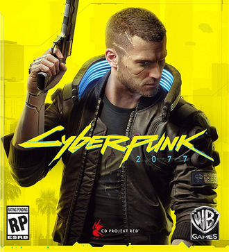

Tudo sobre Cyberpunk 2077
| Cyberpunk 2077 | |
|---|---|
 |
|
| Desenvolvedores | CD Projekt Red |
| Publicadora | CD Projekt |
| Diretor | Adam Badowski |
| Produtor | Konrad Tomaszkiewicz |
| Escritores | Marcin Blacha Tomasz Marchwka |
| Programador | Piotr Tomsínski |
| Compositores | Marcin Przybylowicz P. T. Adamczyk Paul Leonard-Morgan |
| Motor | REDengine 4 |
| Série | Cyberpunk |
| Plataformas | Microsoft Windows PlayStation 4 PlayStation 5 Stadia Xbox One Xbox Series X/S Nintendo Switch 2 |
| Lançamento | Windows, PlayStation 4, Xbox One, Stadia 10 de dezembro de 2020 PlayStation 5, Xbox Series X/S 15 de fevereiro 2022 macOS 2025 Nintendo Switch 2 5 de junho de 2025 |
| Gênero | RPG de ação |
| Modos de jogo | Um jogador |
Cyberpunk 2077 é um jogo eletrônico de RPG de ação desenvolvido pela CD Projekt Red e publicado pela CD Projekt. A história do jogo é ambientada em Night City, um mundo aberto situado no universo fictício de Cyberpunk. Ele é jogado a partir de uma perspectiva em primeira pessoa, com os jogadores controlando um mercenário personalizável conhecido como V, que pode adquirir habilidades de hacking e maquinários, um arsenal de armas de longo alcance e opções de combate no estilo corpo a corpo. A trama segue a luta de V enquanto tenta lidar com um misterioso implante cibernético que ameaça substituir seu corpo com a personalidade e as memórias de uma celebridade falecida perceptível apenas por V; os dois devem trabalhar juntos se houver alguma esperança de separar os dois e salvar a vida de V.
Cyberpunk 2077 foi desenvolvido utilizando REDengine 4 por uma equipe de aproximadamente 500 funcionários, ultrapassando o número de pessoas que trabalharam em The Witcher 3: Wild Hunt (2015), o jogo anterior da desenvolvedora. Para ajudar na produção, a CD Projekt inaugurou uma nova subsidiária na Breslávia, Polônia, e fez parcerias com a Digital Scapes, Nvidia, QLOC e a Jali Research para ajudar na produção do jogo. Mike Pondsmith, o criador de Cyberpunk, prestou consultoria para o jogo. Além disso, o ator Keanu Reeves estrela um papel no elenco principal. A trilha sonora apresenta músicas compostas por Marcin Przybyłowicz em conjunto com outros artistas licenciados.
Após anos de antecipação, a CD Projekt lançou Cyberpunk 2077 para as plataformas PlayStation 4, Stadia, Windows e Xbox One em , seguido para PlayStation 5 e Xbox Series X/S em , além de uma versão para Nintendo Switch 2 que será lançada em . O jogo foi elogiado pelas críticas por sua narrativa, ambientação e gráficos enquanto alguns de seus elementos da jogabilidade receberam opiniões mistas. Além disso, a abordagem de alguns de seus temas bem como a representação de personagens transgêneros foram alvo de críticas. O jogo também foi amplamente criticado pela presença de bugs, principalmente nas versões de console, que sofriam com problemas de desempenho. A Sony removeu o título da PlayStation Store de até
Jogabilidade
Cyberpunk 2077 é um jogo eletrônico de RPG de ação jogado numa perspectiva em primeira pessoa na pele de V (Vincent/Valerie), um mercenário cuja voz, rosto, estilo de cabelo, tipo de corpo e modificações, história de origem e roupas são personalizáveis. As categorias de estatísticas - Corpo, Inteligência, Reflexos, Habilidade Técnica e Moral - são diretamente influenciadas pelas classes de personagens que os jogadores assumem, sendo estas NetRunner (hacking), Techie (maquinário) e Solo (combate). A árvore de vantagens é ramificada nas categorias corpo a corpo, lâminas, revólveres, espingardas, rifles, hacking, combate à duas mãos, assassinato, "sangue frio", engenharia e atletismo. V deve consultar um "medicânico" para atualizar e comprar implantes de cyberware; os mercados negros do jogo oferecem habilidades de nível militar. A raridade de qualquer equipamento é exibida por um sistema de camadas coloridas. V é capaz se proteger, mirar, correr, pular, fazer pulos duplos e deslizar. Ataques corpo a corpo podem ser tratados com armas de combate corpo a corpo. Existem três tipos de armas de longo alcance, todas quais podem ser personalizadas e modificadas - Armas de Energia (padrão), Armas de Tecnologia (cuja munição é capaz de penetrar paredes e inimigos) e Armas Inteligentes (com balas teleguiadas). Armas de longo alcance são equipadas para ricochetearem na direção do alvo e retardá-los no bullet time. Quatro tipos de dano podem ser infligidos e resistidos - Físico, Térmico, PEM e Químico. O uso de armas aumenta a precisão e a velocidade de recarga, que se manifestam nas animações dos personagens.[17] Armeiros consertam e atualizam armas. O jogo pode ser concluído sem matar ninguém, com opções não letais para armas e cyberware.
A metrópole em mundo aberto Night City, Califórnia, consiste em seis regiões - o Centro da Cidade (a central corporativa da cidade), Watson (habitada por imigrantes), Westbrook (composta por uma área luxuosa), Heywood (subúrbio), Pacifica (infestada de gangues) e Santo Domingo (área industrial). A área circundante, as Terras Baldias, também pode ser explorada. V navega por esses locais a pé e em veículos, que estão sujeitos à visão em primeira ou terceira pessoa. Em carros autônomos, V pode se envolver mais facilmente em tiroteios. Os pedestres são vulneráveis a colisões de veículos. Dependendo da localização, a polícia pode ser alertada se V cometer um crime. As estações de rádio estão disponíveis para serem ouvidas. O ciclo de dia-noite completo e o clima dinâmico afetam a maneira como os personagens não-jogadores (NPCs) se comportam. V possui um apartamento e uma garagem. Night City apresenta personagens que não falam inglês, cujos idiomas podem ser traduzidos com implantes especiais. "Braindance" é um dispositivo que permite que V passe pelas experiências de outras pessoas. Uma árvore de diálogo permite a interação com NPCs e ações em missões. Os pontos de experiência são obtidos nas missões principais e abastecem as estatísticas, enquanto as missões secundárias geram "créditos de rua", desbloqueando habilidades, fornecedores, lugares e missões adicionais. As missões são adquiridas de personagens conhecidos como Fixers. Ao longo do jogo, V é auxiliado por vários companheiros. Consumíveis, como refrigerantes, são usados para curar, e os objetos podem ser inspecionados no inventário de V. Os minijogos incluem hacking, lutas de boxe, corrida de veículos, artes marciais e campos de tiro. Mensagens de "Fim de jogo" aparecem apenas no momento da morte; se uma missão falhar, o jogo continua do mesmo jeito. As escolhas feitas pelo jogador implicam em finais diferentes.
Sinopse
Mundo
Night City é uma megacidade americana localizada no Estado Livre da Califórnia do Norte, controlada por corporações - legislações locais e nacionais não têm efeito na região. Existe um conflito interno constante entre gangues e outras entidades que procuram dominar a cidade. Night City depende da robótica para todos os aspectos diários como coleta de resíduos, manutenção e transportes públicos. A sua identidade visual é resultado de quatro eras de austero Entropismo, Brega colorido, opulento Neo-Brega e Neo-Militarismo forçado. A internet é administrada pelo exército e corporações.
A falta de habitação é abundante, mas isso não impede a modificação cibernética para os pobres, dando origem ao vício em cosméticos e consequente violência. Estas ameaças são enfrentadas pela força armada conhecida como Psycho Squad. O Trauma Team é uma equipe especializada em medicina de intervenção rápida. Por causa da constante ameaça física, é permitido a todos os cidadãos o uso de armas de fogo.
Desenvolvimento
Cyberpunk 2077 entrou em pré-produção quando a desenvolvedora CD Projekt Red concluiu The Witcher 3: Wild Hunt - Blood and Wine (2016) com aproximadamente cinquenta membros da equipe envolvidos. Mais tarde, eles dedicaram uma equipe maior do que a empregada em The Witcher 3: Wild Hunt (2015) e, após o lançamento, começaram a atualizar a REDengine 3 no intuito de complementar o Cyberpunk 2077. A CD Projekt Red recebeu subsídios avaliados em 7 milhões de dólares do governo polonês, cujo pedido de financiamento confirmou que eles estavam utilizando REDengine 4. Em junho de 2017, projetos preliminares foram roubados por um grupo de ladrões que ameaçaram liberá-los ao público, porém a desenvolvedora se recusou a cumprir as exigências. O desenvolvimento do jogo atingiu uma meta no final de 2017 e, em março de 2018, um novo estúdio foi inaugurado na Breslávia para auxiliar na produção. Em outubro daquele ano, a CD Projekt Red fimou uma parceria com o estúdio canadense Digital Scapes para criar ferramentas adicionais no Cyberpunk 2077. A desenvolvedora abriu uma parceria com a Nvidia em junho de 2019 para conseguir a tecnologia de ray tracing em tempo real, e a QLOC em janeiro de 2020 para garantia de qualidade.
A equipe de arte do jogo produziu ilustrações conceituais durante a fase de pré-produção, onde determinaram que a estética deveria ser dividida em quatro tipos de estilo - Entrópico, Brega, Neomilitar e Neobrega. A maioria dos veículos foi baseada nos projetos de Marcello Gandini dos anos 80 e 90. No começo do projeto, tanto o processamento de streaming quanto a iluminação global foram feitos para funcionar sem sobrecarregar a unidade central de processamento. O ray tracing melhorou os gráficos de iluminação global, reflexos, oclusão de ambiente e as sombras. No começo da produção foi pensado que o jogo já seria lançado com o modo multijogador, uma vez que o modo foi o primeiro atribuído à pesquisa e desenvolvimento. Contudo, o multijogador foi anunciado como um recurso pós-lançamento.
A perspectiva de câmera em primeira pessoa foi escolhida no intuito de envolver os jogadores mais do que a terceira pessoa permitiria. Tanto as cutscenes quanto à jogabilidade foram feitas para combinarem perfeitamente em primeira pessoa. Cyberpunk 2077 apresenta nudez total, cujo diretor do jogo Adam Badowski disse que encapsula o tema do transumanismo - "o corpo não é mais sacro [sagrado]; é profano [profano]". O roteiro foi totalmente escrito em polonês sendo que posteriormente uma equipe separada traduziu os diálogos para a língua inglesa. Os designers de missões, que supervisionaram a criação de suas próprias ideias, deram liberdade para os jogadores decidirem a ordem em que as missões são feitas. As missões secundárias geralmente eram feitas a partir de conteúdos não aproveitados na história principal. A CD Projekt Red inventou uma tecnologia baseada na análise de som de redes neurais, produzindo sincronia labial em tempo real para todas as localizações. Os sistemas de animação foram refeitos para gerar o movimento muscular de melhor maneira bem como a captura de movimento também foi incrementada. Os ambientes do jogo foram criados a partir de projetos pré-fabricados. Os modelos reutilizados tiveram suas cores e detalhes alterados. Alguns elementos do jogo são gerados por meio de tecnologia procedural.[69] O feedback da E3 2018 influenciou os desenvolvedores a permitir um modo de jogo não-letal e proibir a opção masculino-feminino na personalização do personagem, em vez de basear-se na voz e tipo de corpo.
Com relação ao cenário do jogo, Night City foi projetada com a ajuda de engenheiros urbanistas e sua arquitetura foi inspirada no estilo do Brutalismo. O mundo é carregado usando streaming vertical para revelar somente os elementos ativos que aparecem na tela. Em agosto de 2018, a história foi concluída podendo ser jogada por completo. O conteúdo estava quase completo em meados de 2019, com o resto do desenvolvimento focado principalmente no polimento do jogo. A equipe começou a trabalhar em casa em março de 2020 devido à pandemia de COVID-19, o que também ocasionou atrasos na localização do jogo. Apesar do estúdio desaprovar horas extras de trabalho obrigatórias, isso foi implementado nas últimas semanas.
Cyberpunk 2077 é baseado na franquia Cyberpunk criada por Mike Pondsmith. Pondsmith ingressou no projeto em 2012 como consultor. Ele também aparece como um personagem no jogo. Sua sequência de Cyberpunk V3.0, intitulada Cyberpunk Red, causou impacto na cultura do jogo. Cyberpunk 2077 foi influenciado por uma série de trabalhos tais como o filme Blade Runner de 1982, o mangá e anime Ghost in the Shell e os jogos eletrônicos System Shock (1994) e Deus Ex (2000). Ele apresenta uma motocicleta do mangá e do filme de animação Akira e também um carro inspirado em Mad Max: Estrada da Fúria (2015). O compositor de The Witcher 3: Wild Hunt, Marcin Przybyłowicz, escreveu a partitura juntamente com P. T. Adamczyk e Paul Leonard-Morgan. As músicas tocadas nas estações de rádio do jogo foram feitas exclusivamente para elas; A banda sueca Refused criou músicas para o grupo Samurai enquanto a musicista Grimes dubla a vocalista de Lizzy Wizzy e os Metadwarves. Run the Jewels, ASAP Rocky, Gazelle Twin, Ilan Rubin, Richard Devine, Nina Kraviz, Deadly Hunta, Rat Boy e Tina Guo também contribuíram para a trilha do jogo.
Em julho de 2018, o ator Keanu Reeves foi escolhido para o papel de Johnny Silverhand, sob o pseudônimo de Mr Fusion para manter sigilo. Ele emprestou sua imagem, voz e captura de movimento para o personagem. A quantidade de diálogo de Reeves perde apenas para V. Após passar quinze dias gravando suas falas, o pedido de Reeves para que a presença de Silverhand em tela fosse dobrada foi garantido. O ator Masane Tsukayama interpreta Saburo Arasaka, o líder da Arasaka Corporation. Sebastian Stępień foi o roteirista principal e diretor criativo do jogo antes de partir para a Blizzard Entertainment no início de 2019. No início de outubro de 2020, Cyberpunk 2077 teve o desenvolvimento concluído entrando no "estado gold".
Lançamento e divulgação
Cyberpunk 2077 foi anunciado em maio de 2012. Um teaser do jogo foi lançado em janeiro de 2013. No mesmo ano o jogo foi confirmado para Microsoft Windows, PlayStation 4 e Xbox One durante a E3 2018, onde eles revelaram um segundo trailer e uma demonstração pré-alfa do jogo exclusivamente para a mídia, exibida ao público em agosto após sua apresentação na Gamescom. Na E3 2019, um terceiro trailer anunciou a data de lançamento em 16 de abril de 2020. A data foi adiada pela primeira vez para 17 de setembro, depois para 19 de novembro e, por fim, para o dia 10 de dezembro. Uma segunda demonstração do jogo foi apresentada aos participantes da E3 e da Gamescom em 2019, dos quais quinze minutos apareceram online no final de agosto, após o anúncio de que o jogo será lançado no Stadia. Em fevereiro de 2020, a Nvidia declarou que o título também seria disponibilizado no serviço GeForce Now. Uma réplica em tamanho real da motocicleta Yaiba Kusanagi foi exibida na Tokyo Game Show. Após o cancelamento da E3 2020 devido à pandemia de COVID-19, o evento online Night City Wire da CD Projekt apresentou um quarto trailer, mais demonstrações do jogo e cenas de making-of. Os proprietários das versões do jogo para Xbox One e PlayStation 4 poderão baixá-lo gratuitamente no Xbox Series X e PlayStation 5 após o lançamento. As conversões do jogo para a próxima geração estarão disponíveis em 2021. O modo multijogador será lançado depois de 2021.
A edição padrão fornece o jogo base enquanto a edição de colecionador consiste em uma caixa personalizada, livro estilizado, uma estatueta da versão masculina de V, um encadernado de artes de capa dura, um conjunto de alfinetes de metal e um chaveiro, um guia intitulado A Visitor's Guide to Night City, patchs bordados, um compêndio mundial, cartões postais de Night City bem como mapas e adesivos da cidade. No caso do jogo ser adquirido na pré-venda, a edição padrão também contém o compêndio, cartões postais, mapa e adesivos. Os itens digitais que vêm com cada cópia do jogo são a trilha sonora, livreto de artes, livro de Cyberpunk 2020, papéis de parede e a história em quadrinhos Cyberpunk 2077: Your Voice. As compras do jogo feitas na GOG.com, uma subsidiária da CD Projekt, incluem uma história em quadrinhos digital intitulada Big City Dreams. A Warner Bros. Interactive Entertainment distribuirá o jogo na América do Norte. A Bilkom publicará o título na Turquia. A Bandai Namco Entertainment é a publicadora do jogo para vinte e quatro países europeus e distribuidora na Austrália e Nova Zelândia. A Spike Chunsoft publicará as cópias físicas de PlayStation 4 no Japão.
Bonecos Funko Pops ficaram disponíveis a partir de 16 de abril de 2020. Um livro de artes conceituais de 192 páginas, intitulado The World of Cyberpunk 2077, foi publicado pela Dark Horse Books no dia 29 de julho. Em 9 de setembro, a Dark Horse lançou a primeira edição de uma revista de histórias em quadrinhos, sob o título Cyberpunk 2077: Trauma Team, escrita por Cullen Bunn e ilustrada por Miguel Valderrama. Um jogo de cartas autônomo criado em parceria com a editora CMON Limited chamado Cyberpunk 2077 - Afterlife: The Card Game, está previsto para lançamento em 2020. A CD Projekt Red também lançou uma competição de cosplays que terminou em 2020. A McFarlane Toys assinou um contrato de três anos para fabricar bonecos de ação. A última edição limitada do Xbox One X foi estilizada com o tema de Cyberpunk 2077, incluindo uma cópia digital do jogo e conteúdos para download. Além disso uma série de placas de vídeo, cadeiras gamer, bebidas energéticas e tênis foram projetados com a mesma estética em mente. A partir de maio, a empresa de publicidade Agora Group passou a divulgar jornais, serviços online e canais de rádio na Polônia. Suas subsidiárias faziam publicidade ao ar livre e em cinemas, usando marcas consagradas para divulgar informações sobre o jogo. Cyberpunk: Edgerunners, um anime derivado produzido pelo Studio Trigger, estreou na Netflix em setembro de 2022. Foi o patrocinador oficial do evento da WWE Survivor Series de 2020.
Tanto os jogadores como muitos jornalistas da especialidade fizeram notar que o longo tempo de produção, os vários anúncios e adiamentos bem como por ser o novo jogo de CD Projekt Red desde The Witcher 3: Wild Hunt (2015), criaram em Cyberpunk 2077 uma antecipação considerável na indústria dos videogames.
As versões de Cyberpunk 2077 lançadas no Japão e na China foram sujeitas a uma redução na quantidade de nudez e violência retratados; de tal forma que o jogo atendesse aos requisitos das agências de classificação e às leis de censura. Em fevereiro de 2021, uma mineração de dados feita por hackers no código-fonte do jogo revelou que o conteúdo sinalizado pela censura chinesa foi marcado sob o título "Ursinho Pooh", em referência a um meme de Internet no qual Xi Jinping, o líder do Partido Comunista da China, foi comparado ao personagem em questão.
Phantom Liberty
Antes do anúncio de Phantom Liberty, a única expansão planejada para o jogo, a CD Projekt Red lançou 18 DLCs diferentes para o próprio, elas adicionaram conteúdos cosméticos e de jogabilidade em geral. Além disso, um dos DLCs distribuídos incluiu conteúdo derivado do anime Cyberpunk: Edgerunners. No dia 6 de setembro de 2022, a CD Projekt Red confirmou que a expansão intitulada Cyberpunk 2077: Phantom Liberty seria lançado, posteriormente anunciando seu lançamento oficial para 26 de setembro de 2023 nas plataformas PC, Xbox Series X/S e Playstation 5. Ela teve participação de Keanu Reeves reprisando seu papel de Johnny Silverhand e Idris Elba como Solomon Reed, um agente dos NEUA. Em 16 de novembro de 2022, foi confirmado que Phantom Liberty seria um pacote de expansão paga, semelhante ao modelo empregado nas expansões Blood and Wine e Hearts of Stone, de The Witcher 3.
Em outubro de 2023, CD Projekt Red revelou que tinha gastado cerca de US$ 120 milhões de dólares em Cyberpunk 2077 desde a data do seu primeiro lançamento, com o dinheiro indo principalmente para atualizações, correções de bugs e desenvolvimento/marketing de Phantom Liberty (sendo que a expansão sozinha custou US$ 84 milhões). De acordo com a Kotaku, o jogo base lançado em 2020 custou US$ 174 milhões em desenvolvimento e outros US$ 142 milhões em marketing. O custo total do jogo acabou sendo superior a US$ 436 milhões, tornando-o o segundo videogame mais caro de ser desenvolvido (atrás de Star Citizen) até 2023.
Phantom Liberty foi aclamado pela crítica especializada e também foi um sucesso de vendas.
Recepção
Pré-lançamento
Cyberpunk 2077 ganhou mais de cem prêmios na E3 2018, incluindo "Melhor Jogo", "Melhor Jogo de Xbox One", "Melhor Jogo de PC", "Melhor RPG", e "Escolha do Público" pela IGN, "Melhor Jogo de RPG" e "Jogo do Show" pela Game Informer, "Melhor da E3" pela PC Gamer, e "Jogo do Show" pela GamesRadar+. O segundo trailer foi considerado um dos melhores da exposição, embora o escritor William Gibson, creditado como pioneiro no subgênero cyberpunk, ter dito que "o trailer de Cyberpunk 2077 me impressiona quando o GTA se depara com um retrofuturista genérico dos anos 80". A perspectiva em primeira pessoa, em contraste com a terceira pessoa de The Witcher 3: Wild Hunt, foi também alvo de algumas críticas. Cyberpunk 2077 foi o jogo mais discutido da E3 2019, onde recebeu prêmios de "Melhor da E3" pela GamesRadar+, PC Gamer, Rock, Paper, Shotgun e Ars Technica, e "Melhor Jogo", "Escolha do Público", "Melhor Jogo de PS4", "Melhor Jogo de Xbox One", "Melhor Jogo de PC" e "Melhor RPG" pela IGN. O terceiro trailer foi elogiado com ênfase na revelação de Keanu Reeves.
Liana Ruppert, uma jornalista da Game Informer que tem epilepsia fotossensível, teve um ataque epilético enquanto analisava o jogo dias antes de seu lançamento. A convulsão foi desencadeada pela sequência de "braindance" ("neurodança") do jogo, que contém luzes com flashes vermelhos e brancos bastante similares aos padrões produzidos por aparelhos médicos usados para desencadear convulsões de forma intencional. Em resposta ao acontecimento, a CD Projekt Red entrou em contato com Ruppert e fez um pronunciamento público. A empresa lançou um patch que adicionou um aviso e, em 11 de dezembro, fizeram uma pequena atualização no intuito de reduzir os riscos do evento induzir sintomas epiléticos.
Antes do lançamento do jogo, a CD Projekt Red enviou cópias de análise de Cyberpunk para várias lojas de grande porte. Além disso, a desenvolvedora impôs várias restrições nestas cópias do jogo exigindo que os avaliadores assinassem termos de confidencialidade (NDA). Apenas as imagens fornecidas pela empresa foram permitidas para utilização em análises; de acordo com a Wired Magazine (que não recebeu uma cópia para análise), a multa por violar o NDA custava aproximadamente US$27.000 por infração. Tal medida gerou preocupação pelo fato de que as análises foram baseadas somente na versão do jogo para PC, e não de consoles. Consequentemente, isso acabou minando a confiança de alguns consumidores.
Pós-lançamento
| Recepção | |
|---|---|
| Resenha crítica | |
| Publicação | Nota |
| Eurogamer | Recomendado |
| Easy Allies | 7.5/10 |
| Game Informer | 9/20 |
| GamesRadar+ | |
| GameSpot | 7/10 |
| GamingBolt | 6/10 |
| God is a Geek | 10/10 |
| IGN | Pc: 9/10 PS4/XOne: 4/10 |
| VG247 | |
| The Guardian | |
| Pontuação global | |
| Agregador | Nota média |
| Metacritic | PC: 86/100 PS4: 54/100 XOne: 58/100 |
| OpenCritic | 77/100 |